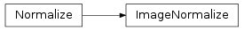

Data Visualization (astropy.visualization)¶
Introduction¶
astropy.visualization provides functionality that can be helpful when visualizing data. At the moment, the main functionality is image normalizing (including both scaling and stretching). Another feature included here is a plotting style for matplotlib.
Using astropy.visualization¶
Scripts¶
This module includes a command-line script, fits2bitmap to convert FITS images to bitmaps, including scaling and stretching of the image. To find out more about the available options and how to use it, type:
$ fits2bitmap --help
Reference/API¶
astropy.visualization.mpl_style Module¶
astropy.visualization Module¶
Functions¶
| scale_image(image[, scale, power, asinh_a, ...]) | Perform scaling/stretching of an image between minimum and maximum cut levels. |
Classes¶
| AsinhStretch | An asinh stretch. |
| AsymmetricPercentileInterval(...[, n_samples]) | Interval based on a keeping a specified fraction of pixels (can be asymmetric). |
| BaseInterval | Base class for the interval classes, which, when called with an array of values, return an interval computed following different algorithms. |
| BaseStretch | Base class for the stretch classes, which, when called with an array of values in the range [0:1], return an transformed array of values, also in the range [0:1]. |
| BaseTransform | A transformation object. |
| CompositeTransform(transform_1, transform_2) | A combination of two transforms. |
| ContrastBiasStretch | A stretch that takes into account contrast and bias. |
| HistEqStretch | A histogram equalization stretch. |
| LinearStretch | A linear stretch. |
| LogStretch | A log stretch. |
| ManualInterval(vmin, vmax) | Interval based on user-specified values. |
| MinMaxInterval | Interval based on the minimum and maximum values in the data. |
| PercentileInterval(percentile[, n_samples]) | Interval based on a keeping a specified fraction of pixels. |
| PowerDistStretch | An alternative power stretch. |
| PowerStretch | A power stretch. |
| SinhStretch | A sinh stretch. |
| SqrtStretch | A square root stretch. |
| SquaredStretch | A convenience class for a power stretch of 2. |
Class Inheritance Diagram¶
![Inheritance diagram of astropy.visualization.stretch.AsinhStretch, astropy.visualization.interval.AsymmetricPercentileInterval, astropy.visualization.interval.BaseInterval, astropy.visualization.stretch.BaseStretch, astropy.visualization.transform.BaseTransform, astropy.visualization.transform.CompositeTransform, astropy.visualization.stretch.ContrastBiasStretch, astropy.visualization.stretch.HistEqStretch, astropy.visualization.stretch.LinearStretch, astropy.visualization.stretch.LogStretch, astropy.visualization.interval.ManualInterval, astropy.visualization.interval.MinMaxInterval, astropy.visualization.interval.PercentileInterval, astropy.visualization.stretch.PowerDistStretch, astropy.visualization.stretch.PowerStretch, astropy.visualization.stretch.SinhStretch, astropy.visualization.stretch.SqrtStretch, astropy.visualization.stretch.SquaredStretch](../_images/inheritance-c37e454cc4bedc44f25312f081be433b82269bc2.png)
astropy.visualization.mpl_normalize Module¶
Normalization class for Matplotlib that can be used to produce colorbars.
Classes¶
| ImageNormalize([vmin, vmax, stretch, clip]) | Normalization class to be used with Matplotlib. |
Class Inheritance Diagram¶
